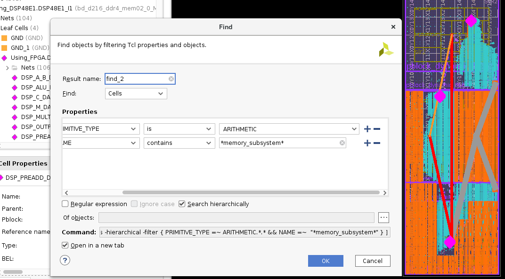
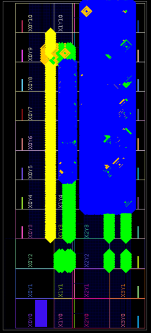
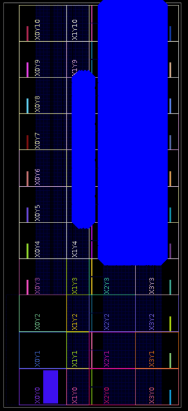
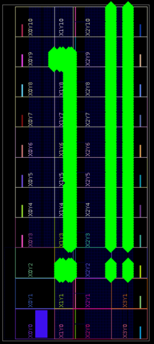

Define power CU floorplan¶
Overview¶
This page describes required input files for the power CU and provides some guidelines on how to define them. The power CU will run typically at 500MHz and should reach the power target of your card.
The power CU is flexible enough to adapt to any FPGA and dynamic region shape but you must still define how much resources you want according to your power target. The power CU high flexibility is achieved by:
Defining a floorplan: shape of the FPGA & power CU.
Defining resource usage: how much FF/DSP/RAMs you want to use within this floorplan.
The floorplan & utilization should allow your card to exceed the maximum power of your card. The excess of power allows the check of the safety features of the card (clock throttle/shutdown & regulator shutdown).
Important
Make sure your power CU is designed according to the maximum power you want to achieve:
Not too big: to have enough granulometric control of the toggle rate: to allow power & thermal qualification of your card/platform at precise levels
Not too small: you won’t be able to test the limit & safety feature of the card.
General step¶
This chapter gives you a view of the required tasks and why:
Get the FPGA logic available for the dynamic region.
It’s the physical localization across FPGA die (and its various SLR if applicable) of all FF, DSP, BRAM, URAM available for any compute unit. Each platform is different so its dynamic region too.
Warning
This step must be re-done every time you change the shape (thus the resources) of the dynamic region.
Define the utilization within this floorplan.
Per Clock Region (CR) of the FPGA, define the percentage of FF/DSP/BRAM/URAM allocated to the power CU.
Some general utilization guidelines are available.
Refine resource usage by eventually disable some of them. This allows fine tuning (within the CR) of the resource.
You may want to forbid some specific areas due to e.g. congestion with other CUs or static region.
Build and close timing.
The power CU itself should not be an issue to close timing but due to the high quantity of resource used, Vivado gives up some time to time too early on the other CU.
xbtest can generate template files for steps 1, 2 & 3. You just have to fill them according to your need.
The actual resources of the power CU are the result of the following equation:
Note
To ease the definition of the utilization & invalid, it’s possible to Visualize power CU floorplan without doing any synthesis or implementation.
Detailed steps¶
Three JSON files are used to define the entire floorplan of the power CU.
The following files should be defined in <xbtest_build>/xclbin_generate/cfg/<dev_platform>/pwr_cfg, where:
<xbtest_build>represents the xbtest build source directory (e.g.path/to/your/xbtest/src/hw/build_source/xbtest_wizard_v6_0/).
<dev_platform>is provided with command line option--xpfm. For example: Ifpath/to/xilinx_u55c_gen3x16_xdma_3_202210_1.xpfmis provided, then<dev_platform>is set withxilinx_u55c_gen3x16_xdma_3_202210_1. Ifpath/to/hw.xsais provided, then<dev_platform>is set withhw. Ifpath/to/your/xilinx-u250-gen3x16-xdma-4.1-202210-1-dev-1-3512975.noarch.rpmis provided, then<dev_platform>is set withxilinx-u250-gen3x16-xdma-4.1-202210-1-dev-1-3512975.noarch.
File name |
Required/optional |
Description |
Note |
|---|---|---|---|
|
Required |
Available primitives in platform dynamic region (see dynamic_geometry.json). |
Automatically generated from a DCP with provided script. |
|
Required |
Power CUs sites utilization (see utilization.json). |
Template automatically generated from a DCP with provided script. |
|
Optional |
Invalid primitives to be excluded (see invalid.json). |
Template automatically generated from a DCP with provided script. |
In xclbin_generate workflow, these files are used to generate one power CU per SLR. All the power CUs are then controlled together by xbtest SW. For each power CU, the workflow generates:
One SV package defining quantity of resources.
One XDC file defining LOC and timing constraints.
As your power CU could contains millions of FF and 1000’s of DSP/RAM, you have to LOC every single element to achieve timing closure.
Automatic generation of templates¶
Power floorplan sources definition¶
When a required power floorplan source file is not found at expected location, each selected power CU will be configured with a single SLICE and the workflow will stop Vitis™ after the OPT design phase and a DCP will be available in
<xbtest_build>/xclbin_generate/output/<dev_platform>/<project name>/u_ex/run/vpp_link/link/vivado/vpl/prj/prj.runs/impl_1/level0_wrapper_opt.dcp
Where:
<xbtest_build>represents the xbtest build source directory (e.g.path/to/your/xbtest/src/hw/build_source/xbtest_wizard_v6_0/).
<dev_platform>is provided with command line option--xpfm. For example: Ifpath/to/xilinx_u55c_gen3x16_xdma_3_202210_1.xpfmis provided, then<dev_platform>is set withxilinx_u55c_gen3x16_xdma_3_202210_1. Ifpath/to/hw.xsais provided, then<dev_platform>is set withhw. Ifpath/to/your/xilinx-u250-gen3x16-xdma-4.1-202210-1-dev-1-3512975.noarch.rpmis provided, then<dev_platform>is set withxilinx-u250-gen3x16-xdma-4.1-202210-1-dev-1-3512975.noarch.
<project_name>is provided with command line option--project_name.
utilization.json¶
The site utilization of the power CUs must be defined. The utilization is the percentage of valid sites: available sites in dynamic region after invalid site exclusion. A utilization is defined for each site type and for each clock region.
Utilization guidelines are provided further down this page.
utilization.json - Definition¶
utilization.json contains the following nodes:
Node |
Description |
Format |
|---|---|---|
|
Utilization of PL sites is defined
per clock region ( |
Dictionary SLR_<SLR idx> : {
CR_Y_<CR_Y idx> : {
CR_X : [ <list of CR_X idx> ],
SLICE : [ <list of SLICE utilizations for each CR_X idx> ],
DSP : [ <list of DSP utilizations for each CR_X idx> ],
BRAM : [ <list of BRAM utilizations for each CR_X idx> ],
URAM : [ <list of URAM utilizations for each CR_X idx> ]
}
}
|
|
Utilization of AIE sites is defined per SLR in percentage [0;100] of number of valid locations in dynamic geometry |
Dictionary SLR_<SLR idx> : <utilization>
|
utilization.json - Examples¶
The following table provides example of utilization.json for some platforms:
Platform |
utilization_template.json |
utilization.json |
|---|---|---|
xilinx_u55c_gen3x16_xdma_3_202210_1 |
||
xilinx_u250_gen3x16_xdma_4_1_202210_1 |
||
xilinx_u50lv_gen3x4_xdma_2_202010_1 |
invalid.json¶
Invalid sites are the primitives to be excluded from the power CUs.
Depending on the settings during the platform generation, routing of the static region is allowed bleed into the dynamic region. Placing power CU logic next to the static region may impeach of both routing (congestion reported by Vivado).
It may necessary to disable some sites: e.g. close to static region or I/Os to ease P&R. Obviously invalid sites must be part of FPGA geometry.
Tip
If there is no invalid site, do not create invalid.json file.
invalid.json - Definition¶
invalid.json contains the following nodes:
Node |
Description |
Format |
|---|---|---|
|
Locations of sites not used in power CU floorplan ( Provide a single site ( See |
Dictionary: SLR_<SLR idx> : [
{ location: <site_type>_X<x0>Y<y0> },
{ location: <site_type>_X<x1>Y<y1>:<site_type>_X<x2>Y<y2> }
]
|
invalid.json - Examples¶
The following table provides example of invalid.json for some platforms:
Platform |
invalid_template.json |
invalid.json |
|---|---|---|
xilinx_u55c_gen3x16_xdma_3_202210_1 |
n/a |
|
xilinx_u250_gen3x16_xdma_4_1_202210_1 |
n/a |
|
xilinx_u50lv_gen3x4_xdma_2_202010_1 |
dynamic_geometry.json¶
The valid sites (available primitives in platform dynamic region) which can be selected by xbtest to be used by the power CU must be contained in the dynamic region pblocks.
dynamic_geometry.json - Definition¶
Important
Do not edit this file.
dynamic_geometry.json contains the following nodes:
Node |
Description |
Format |
|---|---|---|
|
The FPGA part of the DCP used to generate the dynamic geometry. |
String: <part>
|
|
The list of pblock names provided to generate the dynamic geometry. |
List of strings: [ <pblock name> ]
|
|
SLR definition: List of all SLR indexes |
List of integers: [ <SLR index> ]
|
|
Clock Regions definition: List of all the Clock Region indexes ( |
Dictionary: <SLR index> : {
<CR Y> : [ <CR X> ]
}
|
|
Sites types
|
Dictionary: <Site key> : <Site type>
|
|
PL sites definition: List of all site |
Dictionary: <Site key> : {
<SLR index> : {
<CR Y> : {
<CR X> : {
<Site X> : [ <Site Y> ]
}
}
}
}
|
|
AIE sites definition: List of all AIE locations ( Not present if AIE not supported. |
Dictionary: <SLR index> : {
<Site Y> : [ <Site X> ]
}
|
dynamic_geometry.json - Examples¶
The following table provides example of dynamic_geometry.json for some platforms:
Platform |
dynamic_geometry.json |
|---|---|
xilinx_u55c_gen3x16_xdma_3_202210_1 |
|
xilinx_u250_gen3x16_xdma_4_1_202210_1 |
|
xilinx_u50lv_gen3x4_xdma_2_202010_1 |
Power CU floorplanning tips¶
General¶
The power CU requires special attention when it comes to create its floorplan and how to use the available resources.
The actual resources of the power CU are the result of the following equation:
Note
Any utilization defined for Clock Region which are part of the static region will be ignored.
As the dynamic region also contains the memory subsystem, you must leave room for it:
The power CU uses LOC constrains for every resource (FF, DSP, BRAM, URAM).
If the sites utilization is too high, Vivado placer will complain that it has not enough FF/DSP/RAMs.
In a nutshell, here is the procedure to get a quick rough initial floorplan:
Step |
Example |
|---|---|
Run xclbin_generate:
|
|
Open final DCP in Vivado:
Where:
|
|
Find which clock region are occupied by the Memory-SubSystem (Mem-SS). |
|
Find which clock region is occupied by the DDR calibration DSP:
|

Find mem-SS DSP¶ |
If a column of macro (DSP, BRAM or URAM) is located next to the static region, mark it as invalid in invalid.json. |
For example, invalid a column of DSP (X=29) across all SLRs: {
"PL_INVALID" :
"SLR_0": [
{ "location": "DSP48E2_X29Y0:DSP48E2_X29Y89" }
],
"SLR_1": [
{ "location": "DSP48E2_X29Y90:DSP48E2_X29Y185" }
],
"SLR_2": [
{ "location": "DSP48E2_X29Y186:DSP48E2_X29Y281" }
]
}
|
Leave room for the Memory CU to grow:
|
|
Define utilization per clock region: use these typical values:
|
"CR_Y_<cr_y>" : {
"CR_X" : [ <...> <cr_x> <...> ],
"SLICE" : [ <...> 95, <...> ],
"DSP" : [ <...> 100, <...> ],
"BRAM" : [ <...> 100, <...> ],
"URAM" : [ <...> 100, <...> ]
},
"CR_Y_<cr_y>" : {
"CR_X" : [ <...> <cr_x> <...> ],
"SLICE" : [ <...> 0, <...> ],
"DSP" : [ <...> 100, <...> ],
"BRAM" : [ <...> 0, <...> ],
"URAM" : [ <...> 100, <...> ]
},
"CR_Y_<cr_y>" : {
"CR_X" : [ <...> <cr_x> <...> ],
"SLICE" : [ <...> 0, <...> ],
"DSP" : [ <...> 50, <...> ],
"BRAM" : [ <...> 0, <...> ],
"URAM" : [ <...> 100, <...> ]
},
|
Refine utilization number according to timing closure (@ 500MHz) and the actual maximum power reached:
|
Try the display_pwr_fp mode (see Visualize power CU floorplan) to easily visualize the actual location of the power CU across all SLR based on you power floorplan JSON files.
Here is an example of xilinx_u280_xdma_201910_1 floorplan:
xilinx_u280_xdma_201910_1 Floorplan¶
Colour |
Description |
|---|---|
Orange and white |
Power CU:
|
Yellow |
Static region. |
Green |
DDR memory CU. |
Dark Blue |
HBM memory CU (16 channels). |
Turquoise |
Mem-SS and HBM-SS. |
Red rectangle |
Location of the DDR calibration DSP, so no power CU DSPs (white). |
Note
No DSP are used on the left side of the static region (no white column close to yellow static region).
Depending on the platform settings during its generation, routing of the static region is allowed bleed into the dynamic region.
Placing power CU logic next to the static region may impeach routing.
The top SLR doesn’t contain any power CU FF or BRAM, so GT CUs could be added.
Power estimation¶
Important
The power estimation described in this section is only valid for Virtex Ultrascale+ type of Alveo™ card.
The estimated power is computed as:
Where:
The site usage is the number of sites used in the power floorplan.
The site power is an estimation of power consumption for 1 site.
Site power estimation¶ Site type
Site power (mW)
SLICE
1.39158324
DSP
10.96698108
BRAM
48.27586212
URAM
63.94736844
You can find the quantity of Slices, DSPs, BRAMs and URAMs used in the power CU per SLR within Vivado file runme.log.
Look for ID [GEN_CONSTRAINTS-18] in <xbtest_build>/xclbin_generate/output/<dev_platform>/<project_name>/u_ex/run/vpp_link/link/vivado/vpl/runme.log.
Where:
<xbtest_build>represents the xbtest build source directory (e.g.path/to/your/xbtest/src/hw/build_source/xbtest_wizard_v6_0/).
<dev_platform>is provided with command line option--xpfm. For example: Ifpath/to/xilinx_u55c_gen3x16_xdma_3_202210_1.xpfmis provided, then<dev_platform>is set withxilinx_u55c_gen3x16_xdma_3_202210_1. Ifpath/to/hw.xsais provided, then<dev_platform>is set withhw. Ifpath/to/your/xilinx-u250-gen3x16-xdma-4.1-202210-1-dev-1-3512975.noarch.rpmis provided, then<dev_platform>is set withxilinx-u250-gen3x16-xdma-4.1-202210-1-dev-1-3512975.noarch.
<project_name>is provided with command line option--project_name.
INFO: [GEN_POWER_FLOORPLAN-18] SLR0 utilization:
INFO: [GEN_POWER_FLOORPLAN-18] -------------------------------------------------------------------------------
INFO: [GEN_POWER_FLOORPLAN-18] | Resource | Dynamic | Available | Usage | Usage % | Est Pwr W |
INFO: [GEN_POWER_FLOORPLAN-18] -------------------------------------------------------------------------------
INFO: [GEN_POWER_FLOORPLAN-18] | SLICE | 46735 | 45415 | 16220 | 35.72 | 22.57 |
INFO: [GEN_POWER_FLOORPLAN-18] -------------------------------------------------------------------------------
INFO: [GEN_POWER_FLOORPLAN-18] | BRAM | 684 | 684 | 0 | 0.00 | 0.00 |
INFO: [GEN_POWER_FLOORPLAN-18] -------------------------------------------------------------------------------
INFO: [GEN_POWER_FLOORPLAN-18] | URAM | 112 | 112 | 112 | 100.00 | 7.16 |
INFO: [GEN_POWER_FLOORPLAN-18] -------------------------------------------------------------------------------
INFO: [GEN_POWER_FLOORPLAN-18] | DSP | 1368 | 1368 | 1056 | 77.19 | 11.58 |
INFO: [GEN_POWER_FLOORPLAN-18] -------------------------------------------------------------------------------
INFO: [GEN_POWER_FLOORPLAN-18] Total estimated power: 41.31 W
The display_pwr_fp flow gives you directly the total for the whole FPGA in wizard.log, while you need to make this addition for all SLRs if you read Vitis runme.log:
<xbtest_build>/xclbin_generate/output/<dev_platform>/<project name>/wizard.log
INFO: [GEN_POWER_FLOORPLAN-18] Total utilization:
INFO: [GEN_POWER_FLOORPLAN-18] -------------------------------------------------------------------------------
INFO: [GEN_POWER_FLOORPLAN-18] | Resource | Dynamic | Available | Usage | Usage % | Est Pwr W |
INFO: [GEN_POWER_FLOORPLAN-18] -------------------------------------------------------------------------------
INFO: [GEN_POWER_FLOORPLAN-18] | SLICE | 182175 | 182175 | 37615 | 20.65 | 52.34 |
INFO: [GEN_POWER_FLOORPLAN-18] -------------------------------------------------------------------------------
INFO: [GEN_POWER_FLOORPLAN-18] | DSP | 10634 | 10634 | 8678 | 81.61 | 95.17 |
INFO: [GEN_POWER_FLOORPLAN-18] -------------------------------------------------------------------------------
INFO: [GEN_POWER_FLOORPLAN-18] | BRAM | 2384 | 2384 | 912 | 38.26 | 44.03 |
INFO: [GEN_POWER_FLOORPLAN-18] -------------------------------------------------------------------------------
INFO: [GEN_POWER_FLOORPLAN-18] | URAM | 1068 | 1068 | 940 | 88.01 | 60.11 |
INFO: [GEN_POWER_FLOORPLAN-18] -------------------------------------------------------------------------------
INFO: [GEN_POWER_FLOORPLAN-18] Total estimated power: 251.65 W
Power limitations/considerations and general advises¶
Make sure you power CU is designed according to the maximum power you want to achieve (not too big, not too small).
The power CU should run at 75-80% of toggle rate and still being capable of reaching the maximum power when the FPGA is cold and with server fan spinning at 100% (with 20C ambient air).
75-80% leaves margin for testing clock throttle and clock shut-down safety mechanism present in some shells (e.g. u50 subsystem 2.0).
Don’t count on the general leakage of the device to reach the target power:
The maximum power should be reached even if the FPGA is cold (@35C).
TSMC improves continuously its processes and user may have to redesign the power CU if the leakage is reduced.
Visualize power CU floorplan¶
Visualization overview¶
xbtest_wizard allows the power CU floorplan visualization without synthesis and implementation.
It generates the power CU floorplan the same way as it is done during the power CU output products generation (during Vitis execution) and a Vivado project is generated, which allow to mark the site of the power CU floorplan with simple commands.
Setup¶
The following parameters need to be set to in Wizard configuration JSON file: wizard_cfg.json:
pwr_floorplan_dir: Specify power floorplan source directory.
display_pwr_floorplan: Set totrue.
cu_selection.power: Specify all the power CU.
The following example shows the minimal required parameters:
{
"xbtest_power_fp": {
"build": {
"pwr_floorplan_dir" : "../pwr_cfg",
"display_pwr_floorplan" : true
},
"cu_selection" : {
"power" : [0, 1, 2]
}
}
}
Run xclbin_generate workflow using command line option --skip_xclbin_gen to skip xclbin generation.
A Vivado project will be generated and then opened running a generated setup.tcl script using the following commands:
Move to xclbin_generate directory:
$ cd <xbtest_build>/xclbin_generateRun xclbin_generate workflow:
$ python3 gen_xclbin.py --ip_catalog <xbtest_catalog> --skip_xclbin_gen --xpfm path/to/your/platform.xpfm --wizard_config_name xbtest_power_fp --config_dir path/to/your/config_dir --project_name prj_power_fpOpen project:
$ vivado -source ./output/<dev_platform>/prj_power_fp/u_ex/run/display_pwr_fp/setup.tcl
Where:
<xbtest_catalog>represents the xbtest IP catalog directory (e.g.path/to/your/xbtest/src/hw/xbtest_catalog/).
<xbtest_build>represents the xbtest build source directory (e.g.path/to/your/xbtest/src/hw/build_source/xbtest_wizard_v6_0/).
<dev_platform>is provided with command line option--xpfm. For example: Ifpath/to/xilinx_u55c_gen3x16_xdma_3_202210_1.xpfmis provided, then<dev_platform>is set withxilinx_u55c_gen3x16_xdma_3_202210_1. Ifpath/to/hw.xsais provided, then<dev_platform>is set withhw. Ifpath/to/your/xilinx-u250-gen3x16-xdma-4.1-202210-1-dev-1-3512975.noarch.rpmis provided, then<dev_platform>is set withxilinx-u250-gen3x16-xdma-4.1-202210-1-dev-1-3512975.noarch.
Visualize floorplan¶
Display the power CU resources in different colour depending on the type:
Site type |
Colour |
|---|---|
SLICE |
blue |
DSP |
green |
BRAM |
orange |
URAM |
yellow |
Command |
Syntax |
Usage |
Example |
|---|---|---|---|
Report the utilization of the power CU |
display_pwr_fp <resource>
|
|
Use command display_pwr_fp all
display_pwr_fp all
unmark_objects
display_pwr_fp SLICE
unmark_objects
display_pwr_fp DSP
|
Report the utilization of the power CU |
report_utilization <resource> <area>
|
|
report_utilization all SLR
report_utilization SLICE SLR
report_utilization DSP CR
|
Command |
Description |
Output |
|---|---|---|
display_pwr_fp all
|
Display all sites types |

display_pwr_fp all¶ |
display_pwr_fp SLICE
|
Display SLICE sites |

display_pwr_fp SLICE¶ |
display_pwr_fp DSP
|
Display DSP sites |

display_pwr_fp DSP¶ |
FPGA part¶
The FPGA part must be set in the platform XPFM file (provided via command line option --xpfm to xclbin_generate workflow).
xclbin_generate workflow expects the value of the FPGA part to be defined in:
hardwarePlatforms.hardwarePlatform.board.part
Alternatively, the FPGA part can be overwritten using fpga_part parameter in Wizard configuration JSON file: wizard_cfg.json.
For example, set u50 board part:
{
"xbtest_power_fp": {
"platform": {
"fpga_part" : "xcu50-fsvh2104-2L-e"
}
"build": {
"pwr_floorplan_dir" : "../pwr_cfg",
"display_pwr_floorplan" : true
},
"cu_selection" : {
"power" : [0]
}
}
}
Other outputs¶
In the build directory, the following other outputs can be found, relatively to the directory <xbtest_build>/xclbin_generate/output/<dev_platform>/prj_power_fp/u_ex/run/display_pwr_fp.
Where:
<xbtest_build>represents the xbtest build source directory (e.g.path/to/your/xbtest/src/hw/build_source/xbtest_wizard_v6_0/).
<dev_platform>is provided with command line option--xpfm. For example: Ifpath/to/xilinx_u55c_gen3x16_xdma_3_202210_1.xpfmis provided, then<dev_platform>is set withxilinx_u55c_gen3x16_xdma_3_202210_1. Ifpath/to/hw.xsais provided, then<dev_platform>is set withhw. Ifpath/to/your/xilinx-u250-gen3x16-xdma-4.1-202210-1-dev-1-3512975.noarch.rpmis provided, then<dev_platform>is set withxilinx-u250-gen3x16-xdma-4.1-202210-1-dev-1-3512975.noarch.
Description |
File location |
|---|---|
Site utilization (total and per SLR) |
|
All XDC constraints (caution, huge file) |
|
The SV packages defining the number of resources to be synthesized |
|
TCL scripts to mark sites in the output Vivado project |
|